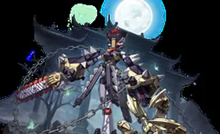
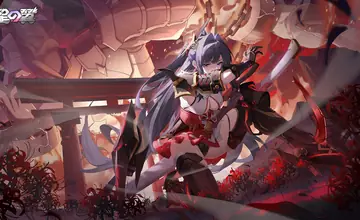
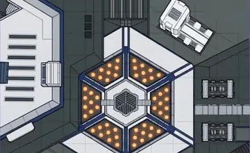
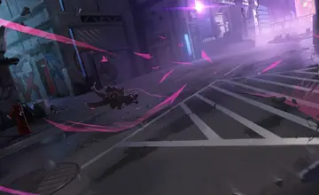

Tools
攻略ツール
キャラ別アップデート、ランダム抽選、2v2確認、Pick/Banをここから開けます。

Update キャラ別アップデート 公式更新内容をキャラごとに整理。
Random STARWARD ROULETTE キャラ抽選やランダム選出に使うルーレット。
2v2 Starward 2v2 チーム構成や2v2の確認に使うツール。
Ban/Pick Pick/Ban Board 対戦前のPick/Banを盤面で管理できます。 Compare キャラ比較 コスト、体力、武装数、降りテク数を横並びで確認。 Landing 降りテク一覧 キャンセルルートから降りテクだけを抽出。 Recent 最近の更新 編集が入ったキャラと追加動画を確認。